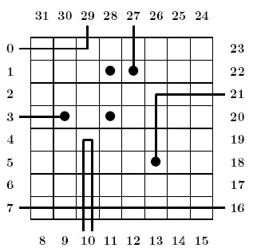

Home Page
F.A.Qs
Statistical Charts
Past Contests
Scheduled Contests
Award Contest
| Online Judge | Problem Set | Authors | Online Contests | User | ||||||
|---|---|---|---|---|---|---|---|---|---|---|
| Web Board Home Page F.A.Qs Statistical Charts | Current Contest Past Contests Scheduled Contests Award Contest | |||||||||
|
Language: Black Box
Description  Physicists study atoms hidden in a ``black box". So as to get information on the position of atoms in the box, they cast a laser beam through gates and look at where light gets out from the box. As a computer scientist you are (kindly) requested to interpret the physicists experiments. Problem By weighting the box, the physicists already managed to count how many atoms there are (K = 5) . Besides, they adopt a grid model. First, the box is quite simple: this is a flat, N x N box (N = 8) , with 32 = 4 * N gates, which are numbered as shown above. Additionally, following the famous ``no border principle" and a loose application of Pauli exclusion principle, the physicists restrict the available positions to the central 36 = (N - 2)2 positions, and they assume that no two atoms occupy the same position. Besides, in the grid model, light is also quite simple:
Input Input is a log of experiments performed over a given box. The first line is an integer e (0 < e<=32) . Integer e is the number of experiments performed. Then, come e lines, each line being made of two integers. The first integer i is a gate number expressing that the beam enters the box at gate i . The second integer o is either a gate number, expressing that the beam leaves the box at gate o , or the integer `-1', expressing that the beam is absorbed. Output If the atom positions can be deduced from the experiments, then your program should output an ascii representation of the box, as N lines of N characters, with atoms being shown as `+' and empty positionsas `-' -- See the first example below. Otherwise, your program should output `NO' on a single line. Notice that `NO' is the correct answer in several situations. More specifically, the experiments may be contradictory (there does not exist a repartition of atoms compatible with the experiments) or non-concluding (there exist several repartitions of atoms compatible with the experiments). Sample Input 7 0 29 27 -1 21 -1 10 10 3 -1 16 7 6 12 Sample Output -------- ---++--- -------- -+-+---- -------- -----+-- -------- -------- Hint Observe that this output describes the box shown in the introduction.
If input is: 10 0 23 1 28 7 8 20 -1 19 25 10 16 2 31 4 5 12 -1 29 -1 Then, correct output is: NO Source |
[Submit] [Go Back] [Status] [Discuss]
All Rights Reserved 2003-2013 Ying Fuchen,Xu Pengcheng,Xie Di
Any problem, Please Contact Administrator